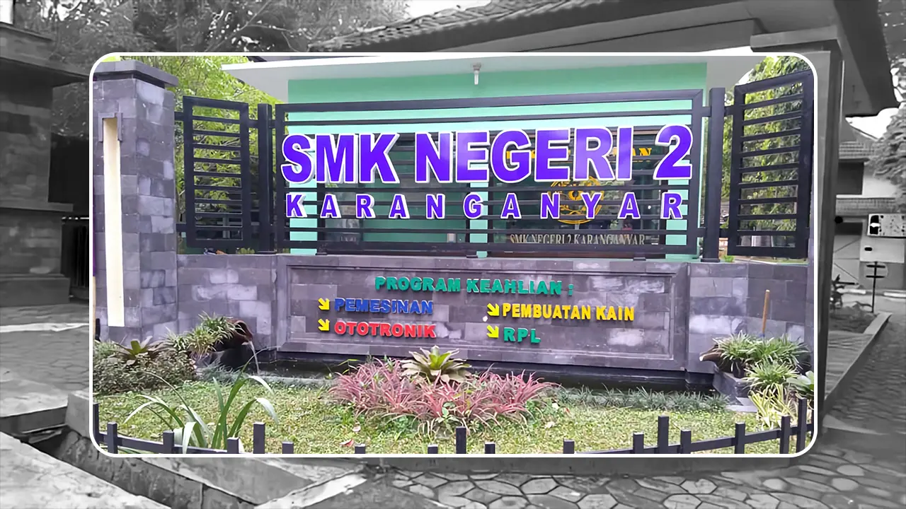

Selesai
Harga makanan di kantin sekolah tidak konsisten
Dikirim oleh A*** P******* pada 18 Juli 2024
Beberapa siswa mengeluhkan harga yang terlalu mahal tanpa daftar harga yang jelas. Hal ini menyebabkan kebingungan dan ketidaknyamanan dalam membeli makanan saat istirahat.
Beberapa siswa mengeluhkan harga yang terlalu mahal tanpa daftar harga yang jelas. Kantin sekolah seharusnya menyediakan daftar harga tetap untuk memastikan transparansi dan keadilan bagi semua siswa.